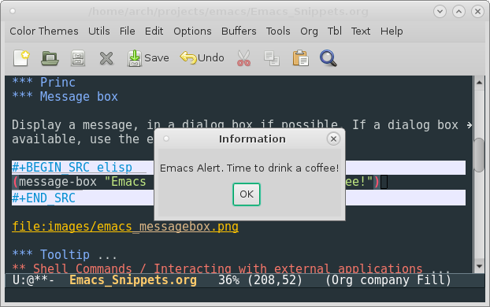
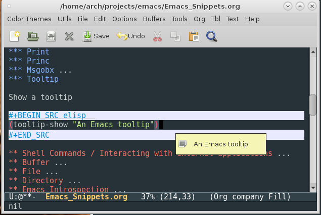
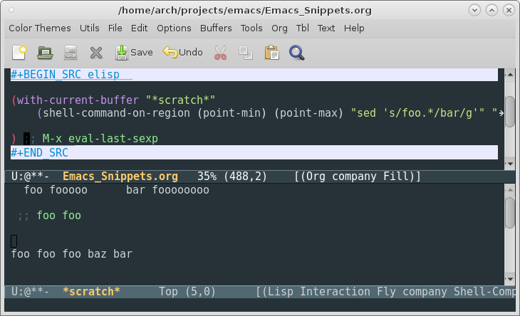
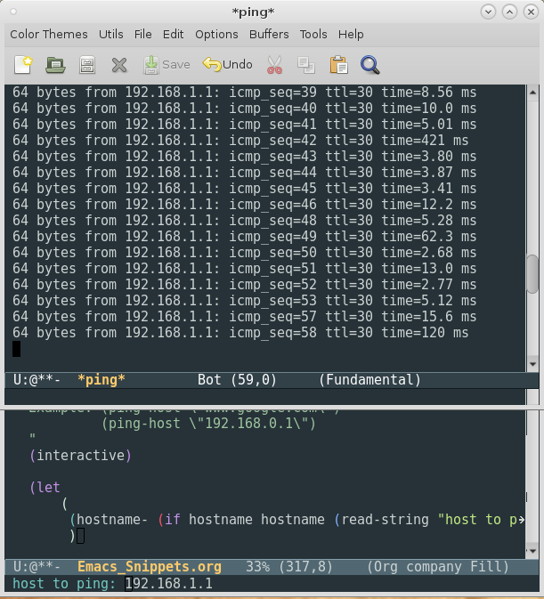
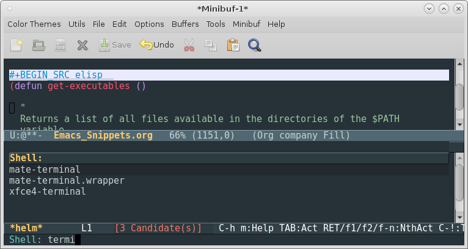

Elisp Snippets
Table of Contents
- 1. Elisp Snippets
- 1.1. Strings
- 1.2. S-expressions
- 1.3. Clipboard (Kill-ring)
- 1.4. Elisp
- 1.5. Common Lisp Emulation Library
- 1.6. Buffer and regions
- 1.7. Input - Read User Input
- 1.8. Output
- 1.9. Shell Commands / Interacting with external applications
- 1.10. File
- 1.11. Directory
- 1.12. Text Manipulation
- 1.13. Emacs Introspection
- 1.14. Web Browser
- 1.15. Packages
- 1.16. Dired mode snippets
- 1.17. Helm Snippets
- 1.18. Eshell
- 1.18.1. Overview
- 1.18.2. Start Eshell Directly from command line
- 1.18.3. Useful elisp commands inside eshell
- 1.18.4. Clear eshell
- 1.18.5. Set eshell prompt
- 1.18.6. Change Eshell current directory
- 1.18.7. Change Eshell current directory to current buffer
- 1.18.8. Open eshell in another window
- 1.18.9. Open eshell in another frame
- 1.18.10. Open eshell file names from ls output with Return key
- 1.18.11. Functions to copy eshell data to clipboard
- 1.18.12. Creating Eshell aliases programatically
- 1.19. Non categorized
- 2. Configuration Snippetes
- 3. Emacs Server and Client
- 4. Useful Elisp Info Pages
- 4.1. Elisp
- 4.2. Customization
- 4.3. Layout
- 4.4. Syntax Tables
- 4.5. Environment Variables and OS Detection
- 4.6. Subprocess Creation
- 4.7. Keybindings
- 4.8. Hooks (Events Callbacks)
- 4.9. Buffer
- 4.10. Window
- 4.11. Frame
- 4.12. Files
- 4.13. Text Enconding ISO UTF8 …
- 4.14. Loading, Libraries and Packages
- 4.15. Batch Mode
- 4.16. Syntax Highlight
- 5. Selected Gists
1 Elisp Snippets
1.1 Strings
1.1.1 Concatenate strings
> (concat "hello" " world") "hello world" > (concat "hello" " world" " elisp ") "hello world elisp " > (apply #'concat '("hello" " world " " elisp ")) "hello world elisp "
1.1.2 Join Strings by Separator
(defun join (sep lst) (mapconcat 'identity lst sep)) ELISP> (join "," '("1.232" "300" "500")) "1.232,300,500" ELISP> (join ", " '("1.232" "300" "500")) "1.232, 300, 500"
1.1.3 Split String
> (split-string "100,200,300,400" ",") ("100" "200" "300" "400") > (split-string (getenv "PATH") ":") ("/usr/local/sbin" "/usr/local/bin" "/usr/bin" ...)
1.1.4 Split String with quotes
> (split-string-and-unquote "/bin/app -x -y -z \"/home/user/some name with space/etc\" -k cmd ") ("/bin/app" "-x" "-y" "-z" "/home/user/some name with space/etc" "-k" "cmd")
1.1.5 Replace Strings
1.1.6 Regex
1.2 S-expressions
1.2.1 Parse s-expressions
;; Exaluate with M-x eval-print-last-sexp > (read "(mapc (lambda (p) (insert p) (insert \"\n\")) (buffer-list)) ") (mapc (lambda (p) (insert p) (insert " ")) (buffer-list)) > (read "(+ 1 2 3 4)") (+ 1 2 3 4)
1.2.2 Evaluate s-expressions
> (eval (read "(+ 1 2 3 4)" )) 10 > (eval '(+ 1 2 3 4)) 10
1.3 Clipboard (Kill-ring)
1.3.1 Copy string to clipboard
(defun clipboard/set (astring) "Copy a string to clipboard" (with-temp-buffer (insert astring) (clipboard-kill-region (point-min) (point-max))))
1.3.2 Paste string from clipboard
(defun clipboard/get () "Return the content of clipboard as string" (interactive) (with-temp-buffer (clipboard-yank) (buffer-substring-no-properties (point-min) (point-max))))
1.3.3 Copy buffer file name to clibpoard
(defun buffer/copy-file-name () (interactive) (clipboard/set (buffer-file-name))) ;; Eval using M-x eval-print-last-sexp ;; > (buffer/copy-file-name) nil > (insert (clipboard/get)) /home/arch/projects/emacs/Emacs_Snippets.org
1.3.4 Copy buffer directory to clibpoard
(defun buffer/copy-path () (interactive) (clipboard/set (file-name-directory (buffer-file-name))) (message "Copied file path to clipboard") ) ;; Eval using M-x eval-print-last-sexp ;; > (buffer/copy-path) "Copied file path to clipboard" > (clipboard/get) "/home/arch/projects/emacs/"
1.3.5 Copy buffer content to clipboard
(defun buffer/copy-content () " Copy buffer content to clibpoard Usage: M-x buffer/copy-content " (interactive) (clipboard/set (buffer-substring-no-properties (point-min) (point-max) )))
1.4 Elisp
1.4.1 Load an Elisp file
Load an elisp source file *.el.
(load-file "~/.emacs.d/tools.el")
Load an byte-compiled (*.elc) elisp file.
(load-file "~/.emacs.d/tools.elc")
1.4.2 Load all elisp files of a directory
(defun load-dir (path) " Load all elisp files (*.el) of a directory Usage: (load-dir <path>) Example: (load-dir \"~/.emacs.d/custom\") " (mapc #'load (directory-files path t "\\.el$")))
1.4.3 Add directory to load path
It adds a directory containing Emacs packages (<package name>.el) to
the load path. The user can load packages by adding the code (require '<package>)
to the file init.el.
(add-to-list 'load-path "~/.emacs.d/custom") ;; package -> ~/.emacs.d/custom/package.el ;; (require 'package)
1.4.4 Switch and Create the Scratch Buffer
This function switches and crates the scratch buffer if it doesn't exist or was deleted. Usage: M-x scratch.
(defun scratch () " Switches to scratch buffer and creates it if it doesn't exist. Usage: M-x scratch This function is useful to Elisp developers. Suggestion: Add (defalias 's #'scratch) to the init file. You can switch to the scratch buffer with > M-x s " (interactive) (let ((buf (get-buffer-create "*scratch*"))) (switch-to-buffer buf) (lisp-interaction-mode) )) (defalias 's #'scratch)
1.5 Common Lisp Emulation Library
1.5.1 Reduce (fold left) function
- Build a number from a list of digits
(require 'cl) ELISP> (cl-reduce (lambda (acc x) (+ (* 10 acc) x)) '(1 2 3 4 5 6) :initial-value 0) 123456 (#o361100, #x1e240)
- Test if all values of a list are true
(require 'cl) ELISP> (cl-reduce (lambda (acc x) (and acc x)) '(t nil t t t f) :initial-value t) nil ELISP> (cl-reduce (lambda (acc x) (and acc x)) '(t t t t t f) :initial-value t) f ELISP> (cl-reduce (lambda (acc x) (and acc x)) '(t t t t t t) :initial-value t) t (defun all-p (bool-list) "Tests if all values of bool-list are true (not nil)" (cl-reduce (lambda (acc x) (and acc x)) bool-list :initial-value t)) ELISP> (all-p '(t t t)) t ELISP> (all-p '(t nil t)) nil
- Test if at least one value of a list is true
ELISP> (cl-reduce (lambda (acc x) (and acc x)) '(t t t t t t) :initial-value t) t ELISP> (cl-reduce (lambda (acc x) (or acc x)) '(t t t t t t) :initial-value nil) t ELISP> (cl-reduce (lambda (acc x) (or acc x)) '(nil nil nil t t nil) :initial-value nil) t ELISP> (cl-reduce (lambda (acc x) (or acc x)) '(nil nil nil nil nil nil) :initial-value nil) nil ELISP> () (defun some-p (bool-list) "Tests if at least one value bool-list is true (not nil)" (cl-reduce (lambda (acc x) (or acc x)) bool-list :initial-value nil)) ELISP> (some-p '(t t t t)) t ELISP> (some-p '(nil t nil nil)) t ELISP> (some-p '(nil nil nil nil)) nil
1.6 Buffer and regions
1.6.1 Save buffer
(save-buffer)
1.6.2 Get buffer content as string
Returns the content of a buffer referencend by its name or the buffer object.
(defun buffer-content (&optional buffer-or-name) (with-current-buffer (if buffer-or-name buffer-or-name (current-buffer)) (buffer-substring-no-properties (point-min) (point-max) )))
1.6.3 Get selected text as string
Returns the selected text of the current buffer.
(defun get-selection () "Get the text selected in current buffer as string" (interactive) (buffer-substring-no-properties (region-beginning) (region-end)))
1.7 Input - Read User Input
1.7.1 Prompt functions
| Function | Description |
|---|---|
| read-string | Read input as string |
| read-file-name | Read input as file name |
| read-directory-name | Read input as path to directory |
| read-regexp | Read input as regular expression |
1.7.2 Read string
> (read-string "prompt > ") ;; M-x eval-print-last-sexp "user enter some string in minibuffer"
Ask the user for a string and insert in the buffer
> (insert (concat "\n" (read-string " prompt > " ))) ;; M-x eval-last-sexp user enter a message in the minibuffer
1.7.3 Read file name
Reads a file name from the user and gives auto completion. Enter tab to autocomplete the file name.
> (read-file-name "Enter a file name: ") ;; M-x eval-print-last-sexp "/etc/fstab"
1.7.4 Read file name and insert at point
Opens a prompt that asks for the path in the minibuffer with completion and inserts the path at the current point.
- Usage: M-x insert-path
(defun insert-path () " Opens a prompt that asks for the path in the minibuffer with completion and inserts the path at the current point. Usage: M-x insert-path " (interactive) (insert (read-file-name "file > ")))
1.7.5 Read a directory path
> (read-directory-name "Enter a directory: ") ;; M-x eval-print-last-sexp "/var/log"
1.8 Output
1.8.1 Message
Display a message at the bottom of the screen.
(message "A message to the user")

1.8.2 Print
1.8.3 Princ
1.8.4 Message box
Display a message, in a dialog box if possible. If a dialog box is not available, use the echo area.
(message-box "Emacs Alert. Time to drink a coffee!")

1.8.5 Tooltip
Show a tooltip
(tooltip-show "An Emacs tooltip")

1.9 Shell Commands / Interacting with external applications
1.9.1 Related Documentation
[C-h-f] <name of function>
- shell-command
- async-shell-command
- start-process
- call-process
- shell-command-to-string
- shell-command-on-region
- getenv
- setenv
1.9.2 Synchronous Shell Commands
- Display output of shell command
(shell-command "uname -a") ;; M-x eval-last-sexp

- Display output of shell command in another frame
Display PCI cards in another frame.
(with-selected-frame (make-frame) (shell-command "lspci"))
- Shell Command To String
> (shell-command-to-string "uname -a") ;; M-x eval-print-last-sexp "Linux localhost 4.7.0-1-ARCH #1 SMP PREEMPT Mon Aug 8 22:05:58 CEST 2016 x86_64 GNU/Linux " > (insert (format "\nKernel version %s " (shell-command-to-string "uname -r"))) ;; M-x eval-last-sexp Kernel version 4.7.0-1-ARCH nil (defun insert-debug-info () (interactive) (insert (concat "Kernel version : ") (shell-command-to-string "uname -r")) (insert (concat "Linux distribution : ") (shell-command-to-string "cat /etc/issue")) (insert (concat "Gcc version :") (shell-command-to-string "gcc --version | grep GCC")) ) ;; M-x insert-debug-info Kernel version : 4.7.0-1-ARCH Linux distribution : Arch Linux \r (\l) Gcc version :gcc (GCC) 6.1.1 20160802
- Shell Command Wrappers
The function shell-command-to-lines runs a shell command and returns the output lines. This function is useful to create shell command wrappers over Unix shell commands like find.
(defun shell-command-to-lines (command) (remove-if-not (lambda (s) (/= (length s) 0)) (split-string (shell-command-to-string command) "\n"))) ELISP> (mapc #'princ (shell-command-to-lines "ls /var/log")) btmpfailloghttpdjournallastlogoldpacman.logsambaspeech-dispatcherwtmpXorg.0.logXorg.0.log.old ("btmp" "faillog" "httpd" "journal" "lastlog" "old" "pacman.log" "samba" "speech-dispatcher" "wtmp" "Xorg.0.log" "Xorg.0.log.old") ELISP> (mapc (lambda (p) (princ p) (princ "\n")) (shell-command-to-lines "ls /var/log")) btmp faillog httpd journal lastlog old pacman.log samba speech-dispatcher wtmp Xorg.0.log Xorg.0.log.old
Example: Shell command wrapper find
ELISP> (mapc (lambda (p) (princ p) (princ "\n")) (shell-command-to-lines "find ~/.local/share/ -name \"*.desktop\"")) /home/arch/.local/share/xfce4/helpers/custom-WebBrowser.desktop /home/arch/.local/share/applications/userapp-mono-IAJQMY.desktop /home/arch/.local/share/applications/userapp-sh-9VFBMY.desktop /home/arch/.local/share/applications/userapp-em-FLD8LY.desktop /home/arch/.local/share/applications/userapp-mpv-FLQ9LY.desktop /home/arch/.local/share/applications/userapp-Firefox-SOBHMY.desktop (defun search-files (directory pattern) (shell-command-to-lines (format "find %s -name '%s'" directory pattern))) ELISP> (search-files "~/.local" "*.desktop") ;; Output changed to fit in the screen ("/home/arch/.local/share/xfce4/helpers/custom-WebBrowser.desktop" "/home/arch/.local/share/applications/userapp-mono-IAJQMY.desktop" "/home/arch/.local/share/applications/userapp-sh-9VFBMY.desktop" "/home/arch/.local/share/applications/userapp-em-FLD8LY.desktop" ... ) ELISP> (mapc (lambda (p) (princ p) (princ "\n")) (search-files "~/.local" "*.desktop")) /home/arch/.local/share/xfce4/helpers/custom-WebBrowser.desktop /home/arch/.local/share/applications/userapp-mono-IAJQMY.desktop /home/arch/.local/share/applications/userapp-sh-9VFBMY.desktop /home/arch/.local/share/applications/userapp-em-FLD8LY.desktop /home/arch/.local/share/applications/userapp-mpv-FLQ9LY.desktop /home/arch/.local/share/applications/userapp-Firefox-SOBHMY.desktop
1.9.3 Pipe a region to external command
- Pipe buffer or region to external command
Pipes the buffer content to external command and print the output in the buffer
*Shell Command Output*. The command$ wc -lcounts the number of line of the current file.> (shell-command-on-region (point-min) (point-max) "wc -l") ;; M-x eval-last-sexp
Pipes the buffer content to external command
$wc -land get the output as a string.> (with-output-to-string ;; M-x eval-print-last-sexp (shell-command-on-region (point-min) (point-max) "wc -l")) "" (defun pipe-region-to-command (pmin pmax command) (interactive) (shell-command-on-region pmin pmax command "*shell-output*" ) (let ( (output (with-current-buffer "*shell-output*" (buffer-substring-no-properties (point-min) (point-max)))) ) (kill-buffer "*shell-output*") output ) ) > (pipe-region-to-command (point-min) (point-max) "wc -l") ;; M-x eval-print-last-sexp "1515 "
- Apply an external command to buffer
The command below will pipe the buffer
*scratch*to the command =$ sed 's/foo.*/bar/g'= which replaces all values of foo for bar.(with-current-buffer "*scratch*" (shell-command-on-region (point-min) (point-max) "sed 's/foo.*/bar/g'" "*shell-output*" t ) ) ;; M-x eval-last-sexp
Before the form evaluation

After the form evaluation.

- Function to apply an external command to buffer
Usage: M-x shell-command-on-buffer Enter: sed 's/defun/defn/g' eplaces all defun words by defn.
(defun shell-command-on-buffer (&optional command) "Apply a shell command in the current buffer and replace it by the command output. Example: - Interactive usage: M-x shell-command-on-buffer Enter: sed 's/defun/defn/g'. replaces all defun words by defn. - (shell-command-on-buffer \"sed 's/defun/defn/g'\") " (interactive) (shell-command-on-region (point-min) (point-max) (if command command (read-string "Cmd on buffer: ")) "*shell-output*" t ) )
- Insert line number in all lines of a buffer using ruby
Enter M-x shell-command-on-buffer and then $ ruby -ne 'printf("-%6s%s", $., $_)'
ruby -ne 'printf("-%6s%s", $., $_)'Before running the command:

After running the command:

- Ruby command on buffer
This function applies a ruby batch command on the buffer.
See also: Ruby One-Liners
(defun ruby-on-buffer (&optional command) " Applies a ruby command on buffer Example: The command will number each line of the current buffer. 1. M-x ruby-on-buffer 2. type: 'printf(\"%6s%s\", $., $_)' without quotes. " (interactive) (shell-command-on-buffer (format "ruby -ne '%s'" (if command command (read-string "ruby cmd >")))))

- Ruby regex on buffer
Emacs regexp islimited and doesn't have lookahead like perl or ruby regex. This command can extend the functionality of Emacs regex using ruby. This function applies a ruby regex on the buffer.
Usage: M-x ruby-gsub-on-buffer
See also: Ruby One-Liners
(defun ruby-gsub-on-buffer (&optional regexp) " Applies ruby regex, the command $ ruby -pe 'gsub(regexp)' on the current buffer. Usage M-x ruby-gsub-on-buffer (ruby-gsub-on-buffer <regexp>) Example: The Command replace all occurrences of 'defun' by 'defn'. 1. M-x ruby-gsub-on-buffer 2. Type /defun/,\"defn\" " (interactive) (shell-regexp-on-buffer (format "ruby -pe 'gsub(%s)'" (if regexp regexp (read-string "ruby regex: ")))))
1.9.4 Launch apps in Asynchronous mode
1.9.5 Run asynchronous commands piping the output to a buffer
- Ping a host
(start-process NAME BUFFER PROGRAM &rest PROGRAM-ARGS
Usage: M-x ping-host or (ping-host <hostname>)
(defun ping-host (&optional hostname) " Ping a hostname. Usage: - Interactive: M-x ping-host - Command: (ping-host <hostname>) Example: (ping-host \"www.google.com\") (ping-host \"192.168.0.1\") " (interactive) (let ( (hostname- (if hostname hostname (read-string "host to ping: "))) ) ;; (with-selected-frame (make-frame) ;; ;; ;; ;; Process name: ping ;; ;; Process buffer: *ping* ;; ;; Command: ping <hostname> ;; ;; ;; (start-process "ping" "*ping*" "ping" hostname-) ;; ) (start-process "ping" "*ping*" "ping" hostname-) (switch-to-buffer-other-frame "*ping*") ))

- Tracerote a host
(defun traceroute-host (&optional hostname) " Ping a hostname. Usage: - Interactive: M-x traceroute-host [Enter the hostname] - Command: (traceroute-host <hostname>) Example: (traceroute-host \"www.yahoo.co.uk\") " (interactive) (let ( (hostname- (if hostname hostname (read-string "host to traceroute: "))) ) (start-process "traceroute" "*traceroute*" "traceroute" hostname-) (switch-to-buffer-other-frame "*traceroute*") ))
1.9.6 Run a ncurses / terminal app
Run linux htop (task manager) inside Emacs:
(term "htop") ;; C-x C-e or M-x eval-last-sexp

1.10 File
1.10.1 Test if file or directory exists
> (file-exists-p "/var/log/pacman.log") ;; M-x eval-print-last-sexp t > (file-exists-p "/var/log/pcaman.log.err") nil ;; > (file-exists-p "/var/log") t ;; > (file-exists-p "/var/log-dont-exists") nil
1.10.2 Expand file name
ELISP> (expand-file-name "~") "/home/arch" ELISP> (expand-file-name "~/.emacs.d/init.el") "/home/arch/.emacs.d/init.el" ELISP> (expand-file-name ".") "/home/arch/projects/emacs"
1.10.3 Read file to string
The Emacs API doesn't provide a straightforward way to read file directly to a string. The only way to perform this taks is using a temporary buffer.
(defun read-file (filename) (with-temp-buffer (insert-file-contents filename) (buffer-substring-no-properties (point-min) (point-max)))) ELISP> (read-file "/etc/host.conf") "#\n# /etc/host.conf\n#\n\norder hosts,bind\nmulti on\n\n# End of file\n" ELISP> (princ (read-file "/etc/host.conf")) # # /etc/host.conf # order hosts,bind multi on # End of file
1.10.4 Open file to edit
1.10.5 Open file to edit silently
Function: find-file-nonselect
Emacs Documentation: Read file FILENAME into a buffer and return the buffer.If a buffer exists visiting FILENAME, return that one, but verify that the file has not changed since visited or saved. The buffer is not selected, just returned to the caller.
Open a file and returns a buffer:
> (setq b1 (find-file-noselect "~/.bashrc")) #<buffer .bashrc> > b1 #<buffer .bashrc>
1.11 Directory
1.11.1 Open directory

1.11.2 Create directory
1.11.3 List directory
Get directory content
ELISP> (directory-files "/var/log") ("." ".." "Xorg.0.log" "Xorg.0.log.old" ... )
Print the directory content in elisp shell IEML.
ELISP> (mapc #'(lambda (p) (princ (concat "\n" p))) (directory-files "/var/log") ) . .. Xorg.0.log Xorg.0.log.old btmp faillog httpd journal lastlog old pacman.log samba speech-dispatcher wtmp
Get directory content with absolute file name.
ELISP> (directory-files "/var/log" t) ("/var/log/." "/var/log/.." "/var/log/Xorg.0.log" "/var/log/Xorg.0.log.old" ... ) ELISP> (mapc #'(lambda (p) (princ (concat "\n" p))) (directory-files "/var/log" t )) /var/log/. /var/log/.. /var/log/Xorg.0.log /var/log/Xorg.0.log.old /var/log/btmp ...
List files of a specific extension:
;; Files ending with *.conf ELISP> (directory-files "/etc/" nil "\\.conf") ("asound.conf" "dhcpcd.conf" "fuse.conf" "gai.conf" ...) ELISP> (directory-files "/etc/" t "\\.conf") ("/etc/asound.conf" "/etc/dhcpcd.conf" "/etc/fuse.conf" ...) ELISP> (directory-files "/etc/" t "\\.cfg") ("/etc/rc_maps.cfg" "/etc/vdpau_wrapper.cfg") ELISP> (directory-files "/etc/" nil "\\.cfg") ("rc_maps.cfg" "vdpau_wrapper.cfg")
1.12 Text Manipulation
1.12.1 Text alignment
Source: Init file - www.svjatoslav.eu
(defun align-to-colon (begin end) "Align region to colon (:) signs" (interactive "r") (align-regexp begin end (rx (group (zero-or-more (syntax whitespace))) ":") 1 1 )) (defun align-to-comma (begin end) "Align region to comma signs" (interactive "r") (align-regexp begin end (rx "," (group (zero-or-more (syntax whitespace))) ) 1 1 )) (defun align-to-equals (begin end) "Align region to equal signs" (interactive "r") (align-regexp begin end (rx (group (zero-or-more (syntax whitespace))) "=") 1 1 )) (defun align-to-hash (begin end) "Align region to hash ( => ) signs" (interactive "r") (align-regexp begin end (rx (group (zero-or-more (syntax whitespace))) "=>") 1 1 )) ;; work with this (defun align-to-comma-before (begin end) "Align region to equal signs" (interactive "r") (align-regexp begin end (rx (group (zero-or-more (syntax whitespace))) ",") 1 1 ))
1.12.2 Join Multiple Lines
From: jidaikobo-shibata/join-multi-lines-to-one.el
(defun join-multi-lines-to-one () "Join multi lines." (interactive) (let ((beg (region-beginning)) (end (region-end)) strings) (goto-char beg) (back-to-indentation) (setq beg (point)) (goto-char end) (goto-char (- (point) 1)) (end-of-line) (setq end (point)) (setq strings (buffer-substring-no-properties beg end)) (setq strings (replace-regexp-in-string "\n\\|^>+ *\\|^[\t ]+" " " strings)) (setq strings (replace-regexp-in-string " +" " " strings)) (delete-region beg end) (insert strings) (goto-char beg)))
1.13 Emacs Introspection
1.13.1 User init file
ELISP> user-init-file "/home/arch/.emacs.d/init.el" ELISP> (expand-file-name user-init-file) "/home/arch/.emacs.d/init.el"
1.13.2 User Emacs Directory
ELISP> user-emacs-directory "~/.emacs.d/" ELISP> (expand-file-name user-emacs-directory) "/home/arch/.emacs.d/"
1.13.3 Enviroment Variables
1.13.4 Get current Operating System
1.13.5 Test if Emacs is running in terminal or in window system
The variable window-system is the name of window system through which the selected frame is displayed.
Its value is a symbol:
- nil for a termcap frame (a character-only terminal)
- 'x' for an Emacs frame that is really an X window
- 'w32' for an Emacs frame that is a window on MS-Windows display
- 'ns' for an Emacs frame on a GNUstep or Macintosh Cocoa display
- 'pc' for a direct-write MS-DOS frame.
(defun test-window-system () (interactive) (if window-system (message "Running in Window System / GUI") (message "Running in terminal ") )) ;; In GUI ;;----------------------------- > (test-window-system) ;; M-x eval-print-last-sexp "Running in Window System / GUI" ;; In Terminal ;;------------------------------ > (test-window-system) ;; M-x eval-print-last-sexp "Running in terminal "
1.14 Web Browser
1.14.1 Browse Url
Open http://www.yandex.com in the web browser
> (browse-url "http://www.yandex.com")
Function to open Yandex.com. Usage M-x open-yandex
(defun open-yandex () "Open the web site http://www.yandex.com" (interactive) (browse-url "http://www.yandex.com") )
1.14.2 Browser Url setting the web browser
Open url with firefox
(let ((browse-url-browser-function 'browse-url-firefox)) (browse-url "http://www.yandex.com")) ;; Or ;; Set browser permanently (setq browse-url-browser-function 'browse-url-firefox)
Open url with chromium browser or chrome
(let ((browse-url-browser-function 'browse-url-chromium)) (browse-url "http://www.yandex.com")) ;;; Or ;; Set browser permanently (setq browse-url-browser-function 'browse-url-chromium)
Open url with Emacs eww browser
(let ((browse-url-browser-function 'eww-browse-url)) (browse-url "http://www.yandex.com") ;;; Or ;; Set browser permanently (setq browse-url-browser-function 'eww-browse-url)
1.14.3 Search Web sites with Emacs
- Search google
Usage: M-x search-google
(require 'url-util) (defun search-google () (interactive) "Search www.google.ca" (browse-url (format "http://www.google.ca?gws_rd=ssl#q=%s" (url-encode-url (read-string "Google: ")))))
- Search a specific url site with google
Usage:
- M-x search-hackernews-with-google
- M-x search-reddit-with-google
- M-x search-stackoverflow-with-gooogle
Usage: M-x search-google (require 'url-util) (defun search-google-url (url params) (let ((google-url (format "site:%s %s" url params))) (browse-url (format "http://www.google.ca?gws_rd=ssl#q=%s" (url-encode-url google-url))))) (search-google-url "https://news.ycombinator.com" "haskell production") (defun search-hackernews-with-google () (interactive) (search-google-url "https://news.ycombinator.com" (read-string "Hnews: "))) (defun search-reddit-with-google () (interactive) (search-google-url "https://www.reddit.com" (read-string "Reddit: "))) (defun search-stackoverflow-with-google () (interactive) (search-google-url "http://stackoverflow.com" (read-string "S.O Search: ")))
- Search github
(require 'url-util) (defun search-github () (interactive) "Search www.google.ca" (browse-url (format "https://github.com/search?q=%s" (url-encode-url (read-string "Github Search: ")))))
- Search gisthub
(require 'url-util) (defun search-gisthub () " Search gisthub : http://gist.github.com Usage: M-x search-gisthub " (interactive) (browse-url (format "https://gist.github.com/search?p=50&q=%s&ref=searchresults" (url-encode-url (read-string "Gisthub Search: ")))))
- Open Emacs Web Manual
(defun open-emacs-manual () " Open Emacs online Manual Usage: M-x open-emacs-manual It opens the web site: https://www.gnu.org/software/emacs/manual " (interactive) (browse-url "https://www.gnu.org/software/emacs/manual/"))
1.15 Packages
1.15.1 Test if package is installed
1.15.2 Install a package if it is not installed
1.16 Dired mode snippets
The dired mode is the mode used by Emacs to browser directories.
See also: How do you customize dired?
Source: hiroina/.emacs
- Copy path of file at point.
(defun dired-copy-path () "In dired, copy file path to kill-buffer. At 2nd time it copy current directory to kill-buffer." (interactive) (let (path) (setq path (dired-file-name-at-point)) (if (string= path (current-kill 0 1)) (setq path (dired-current-directory))) (message path) (kill-new path) ) )
- Open directory at point with Microsoft Explorer in Windows OS.
(defun dired-exec-explorer () "In dired, execute Explorer" (interactive) (let (path) (setq path (dired-file-name-at-point)) (setq path (replace-regexp-in-string "~" "c:/home" path)) (setq path (replace-regexp-in-string "/" "\\\\" path)) (message path) ;(kill-new path) (start-process "explorer" nil "explorer" (concat "/select," path)) ) )
1.17 Helm Snippets
1.17.1 Browser Recent files
Usage: M-x helm-recent-files
(require 'helm) (defun helm-recent-files () (interactive) (helm :prompt "File: " :sources `(( (name . "File: ") (candidates . ,recentf-list) (action . find-file) ))))

1.17.2 Browser Recent directories
Usage M-x helm-recent-dirs
(require 'helm) (defun unique (xs) "Remove repeated elements from list xs Example: > (unique '(x y a b 21 21 10 21 x y a )) (x y a b 21 10) " (let ((result nil)) (dolist (x xs) (if (not (member x result)) (push x result) )) (reverse result) )) (defun helm-recent-dirs () (interactive) (helm :prompt "Dir: " :sources `(( (name . "Dir: ") (candidates . (lambda () (unique (map #'file-name-directory recentf-list)))) (action . dired) ))))
1.17.3 Launch ansync shell command with helm
This piece of code gets all executables in the $PATH variable and searche for one that matches the user input and then launches it. It is useful to launch applications without block Emacs.
Usage: M-x helm-laucher
(defun get-executables () " Returns a list of all files available in the directories of the $PATH variable. " (apply #'append (mapcar (lambda (p) (directory-files p t)) (remove-if-not #'file-exists-p (split-string (getenv "PATH") ":"))))) (defun run-async (&optional command) "Run a shell command in asynchronous mode. It doesn't block Emacs while the command is running. Usage: (run-async \"python -m http.server\") M-x run-async -> User enters a command. " (interactive) (apply #'start-process `( "proc-any" ;; We don't care about the application name nil ;; Don't name the buffer ,@(split-string-and-unquote (if command command (read-string "Command: " ) )) ))) (defun run-async-lst (&rest commands) " Run a shell command in asynchronus mode, not blocking Emacs. Usage: > (run-async-lst <program> <argument 1> <agurment2> ...) Example: > (run-async \"thunar\" \"/usr/share/applications\") " (apply #'start-process `( "dontcare" ;; We don't care about the application name nil ;; Don't name the buffer ,@commands ))) (defun helm-launcher () " Launches applications available in $PATH directories in asynchronous mode without Emacs wait for it. Usage M-x heml-launcher " (interactive) (let ((data (mapcar (lambda (p) (cons (file-name-nondirectory p) p )) (get-executables) ) )) (helm :prompt "Shell: " :sources `(( (name . "Shell: ") (candidates . ,data) (action . run-async) )))))

1.17.4 Switch between buffers associated with files
Switch between buffers associated with files.
(defun switch-file () " Switch between buffers that are associated with files. Depends on helm. Usage: M-x switch file. " (interactive) (let ((data (mapcar (lambda (b) (cons (buffer-file-name b) b )) (remove-if-not #'buffer-file-name (buffer-list))))) (helm :prompt "Buffer: " :sources `(( (name . "File Buffers") (candidates . ,data) (action . switch-to-buffer) ))) ))
1.17.5 Switch between Emacs major modes
(defun helm-switch-mode () " Switch between all major programming modes available in Emacs. Usage: M-x helm-switch-mode " (interactive) (cl-flet ((unique (xs) (let ((result nil)) (dolist (x xs) (if (not (member x result)) (push x result) )) (reverse result) ) )) (helm :prompt "Mode: " :sources `(( (name . "Emacs Major Modes") (candidates . ,(unique (mapcar #'symbol-name (remove-if-not #'symbolp (mapcar #'cdr auto-mode-alist))))) (action . ,(lambda (m) (funcall (intern-soft m)))) ))) ) )
1.17.6 Open a list of web sites
(setq helm-url-default-url-list '( ("google" . "http://www.google.ca") ("yandex" . "http://www.yandex.com") ("reddit" . "http://www.reddit.com") ("/r/haskell". "http://www.reddit.com/r/haskell") ("/r/emacs" . "http://www.reddit.com/r/emacs") ("/r/csharp" . "http://www.reddit.com/r/csharp") ) ) (defun helm-web () (interactive) (helm :prompt "Web Site: " :sources `(( (name . "Bookmarks") (candidates . helm-url-default-url-list) (action . (lambda (c) (browse-url (cdr c))) ) ))) )
1.18 Eshell
1.18.1 Overview
Eshell is a shell implemented in Emacs with many commands implemented in Elisp which makes it cross platform, the commands ls, pwd, cd and etc. works in the same way for Linux, Windows or OSX. In Windows OS it is a good alternative to cmd.exe.
Command to clear Eshell. It can be invoked with $ clear in eshell.
See also:
- Mastering Eshell / Mastering Emacs
- Finally wrapping my head around eshell (the emacs shell)
1.18.2 Start Eshell Directly from command line
Start eshell directly in a new Emacs sessions in the terminal wihout load init.el.
$ emacs -Q -q -nw --eval '(eshell)'
Or
$ emacs -Q -q -nw -f eshell

Start eshell directly in a new Emacs Window
emacs -q -f eshell # Don't load init file.
Or
emacs -q -f eshell # Load init file

1.18.3 Useful elisp commands inside eshell
Eshell can run Elisp command - M-x <command> like ordinary Unix shell apps.
Open a file in the current window
$ find-file /etc/hosts.conf
Open a file in other window
$ find-file-other-window /etc/host.conf
Open a file in other frame
$ find-file-other-frame /etc/host.conf
Browser a directory in current window
$ dired /var/log
Browser a directory in another window
$ dired-other-window /var/log
Browser a directory in another frame
$ dired-other-frame /var/log
1.18.4 Clear eshell
(defun eshell/clear () "clear the eshell buffer." (interactive) (let ((inhibit-read-only t)) (erase-buffer)))
In eshell:
~ $ which eshell eshell is an interactive compiled Lisp function in `eshell.el' ~ $
Before the command clear:

After the command clear:

1.18.5 Set eshell prompt
- Simple prompt
(setq eshell-prompt-function (lambda () "eshell > "))

Prompt with current directory
- Colorized prompt
(setq eshell-prompt-function (lambda nil (concat (propertize (eshell/pwd) 'face '(:foreground "#8787af")) (propertize "❯" 'face '(:foreground "#f75f5f")) (propertize "❯" 'face '(:foreground "#ffaf5f")) (propertize "❯" 'face '(:foreground "#87af5f")) (propertize " " 'face nil))))

1.18.6 Change Eshell current directory
This command can be used in Menus or with helm.
(defun eshell-chdir (path) (with-current-buffer "*eshell*" (cd path) (eshell-emit-prompt))) (eshell-chdir "~/Downloads")
1.18.7 Change Eshell current directory to current buffer
Usage: M-x eshell-cwd
(defun eshell-cwd () " Sets the eshell directory to the current buffer Usage: M-x eshell-cwd " (interactive) (let ( (path (file-name-directory (or (buffer-file-name) default-directory))) ) (with-current-buffer "*eshell*" (cd path) (eshell-emit-prompt))))
1.18.8 Open eshell in another window
Source: mini-eshell.el
Usage: M-x open-mini-eshell
;; open up a mini-eshell (defun quarter-window-vertically () "create a new window a quarter size of the current window" (split-window-vertically) (other-window 1) (split-window-vertically) (other-window -1) (delete-window) ) (defun open-mini-eshell () "open a mini-eshell in a small window at the bottom of the current window" (interactive) (quarter-window-vertically) (other-window 1) (eshell) )
1.18.9 Open eshell in another frame
Usage: M-x eshell-other-frame
(defun eshell-other-frame () " Open eshell in another frame. Usage: M-x eshell-other-frame " (interactive) (with-selected-frame (make-frame) (eshell)))
1.18.10 Open eshell file names from ls output with Return key
Source: Emacs Wiki
This code allows to open files from $ ls command output by selecting
the file name and hitting return or by clicking with the middle mouse
button.
(eval-after-load "em-ls" '(progn (defun ted-eshell-ls-find-file-at-point (point) "RET on Eshell's `ls' output to open files." (interactive "d") (find-file (buffer-substring-no-properties (previous-single-property-change point 'help-echo) (next-single-property-change point 'help-echo)))) (defun pat-eshell-ls-find-file-at-mouse-click (event) "Middle click on Eshell's `ls' output to open files. From Patrick Anderson via the wiki." (interactive "e") (ted-eshell-ls-find-file-at-point (posn-point (event-end event)))) (let ((map (make-sparse-keymap))) (define-key map (kbd "RET") 'ted-eshell-ls-find-file-at-point) (define-key map (kbd "<return>") 'ted-eshell-ls-find-file-at-point) (define-key map (kbd "<mouse-2>") 'pat-eshell-ls-find-file-at-mouse-click) (defvar ted-eshell-ls-keymap map)) (defadvice eshell-ls-decorated-name (after ted-electrify-ls activate) "Eshell's `ls' now lets you click or RET on file names to open them." (add-text-properties 0 (length ad-return-value) (list 'help-echo "RET, mouse-2: visit this file" 'mouse-face 'highlight 'keymap ted-eshell-ls-keymap) ad-return-value) ad-return-value)))
1.18.11 Functions to copy eshell data to clipboard
- Copy current directory
(defun clipboard/set (astring) "Copy a string to clipboard" (with-temp-buffer (insert astring) (clipboard-kill-region (point-min) (point-max)))) ;; Copy current directory to clipboard ;; ;; Usage: Enter $ copy-pwd in eshell ;; (defun eshell/copy-pwd () (clipboard/set (eshell/pwd))) ;; Copy file name with full path to clipboard ;; ;; Usage: Enter $ copy-fpath <filename> in eshell. ;; (defun eshell/copy-fpath (fname) (let ((fpath (concat (eshell/pwd) "/" fname))) (clipboard/set fpath) (concat "Copied path: " fpath)))

1.18.12 Creating Eshell aliases programatically
(eshell/alias "ff" "find-file $1") (eshell/alias "fw" "find-file-other-window $1") (eshell/alias "fr" "find-file-other-frame $1")
Example of usage:

1.19 Non categorized
1.19.1 Save the scratch buffer and reload every Emacs startup
Saves the scratch buffer to a file every times Emacs is closed.
Source: scratch.el
(setq scratch-buffer-file "~/.emacs.d/scratch.el") (setq initial-scratch-message "") ;initial message (add-hook 'kill-emacs-hook 'scratch-save) ; (add-hook 'window-setup-hook 'scratch-resume); ;; window-setup-hook ;; @see info 38.1.1 Summary: Sequence of Actions at Startup (add-hook 'kill-buffer-hook; *scratch* (lambda () (if (equal (buffer-name) "*scratch*") (scratch-save)))) (add-hook 'after-save-hook (lambda () (unless (get-buffer "*scratch*") (scratch-resume)))) (defun scratch-save () (let ((buf (get-buffer "*scratch*"))) (when buf (set-buffer buf) (write-file scratch-buffer-file) (ignore-errors (kill-buffer "scratch.el"))))) (defun scratch-resume () "*scratch* " (interactive) (set-buffer (get-buffer-create "*scratch*")) (funcall initial-major-mode) (insert-file-contents scratch-buffer-file nil nil nil t) (ignore-errors (kill-buffer ".scratch")))
2 Configuration Snippetes
2.1 Save Minibuffer History
Saves the minibuffer history on every Emacs session.
(savehist-mode 1) (setq savehist-additional-variables '(kill-ring search-ring regexp-search-ring)) ;; To set the file which the minibuffer is saved use: (setq savehist-file "~/.emacs.d/tmp/savehist")
3 Emacs Server and Client
See also:
4 Useful Elisp Info Pages
4.1 Elisp
Elisp Top Page
(info "(elisp) Top")
Elisp Info Page
(info "(elisp)")
Introduction to programming Elisp
(info "(eintr)")
Tips about documenting Elisp
(info "(elisp)Documentation Tips")
4.2 Customization
Customization:
(info "(emacs) Customization")
Define Customizable Interface
(info "(elisp) Customization")
4.3 Layout
(info "(emacs) Fonts")
4.4 Syntax Tables
(info "(elisp) Syntax Tables")
4.5 Environment Variables and OS Detection
(info "(elisp) System Environment")
4.6 Subprocess Creation
(info "(elisp) Subprocess Creation")
4.7 Keybindings
(info "(elisp) Function Keys")
(info "(elisp) Keys in Documentation")
(info "(emacs) Windows Keyboard")
4.8 Hooks (Events Callbacks)
(info "(elisp) Hooks")
(info "(elisp) Setting Hooks")
(info "(elisp) Advising Functions")
4.9 Buffer
Buffers
(info "(elisp) Buffers")
Buffer Content
(info "(elisp) Buffer Contents")
Cursor
(info "(elisp) Positions")
Hooks
(info "(elisp)Change Hooks")
Motion
(info "(elisp) Motion")
Text and Strings
(info "(elisp) Text")
(info "(elisp) Strings and Characters")
Buffer Local Variable
(info "(emacs) File Variables")
4.10 Window
Frame
(info "(elisp) Windows")
4.11 Frame
Frame
(info "(elisp) Frames")
Frame Parameters
(info "(elisp) Frame Parameters")
4.12 Files
Files
(info "(elisp) Files")
Change Files
(info "(elisp) Changing Files")
File Name Components
(info "(elisp) File Name Components")
Buffer Local Variable
(info "(emacs) File Variables")
4.13 Text Enconding ISO UTF8 …
(info "(emacs) International")
4.14 Loading, Libraries and Packages
Loading
(info "(elisp) How Programs Do Loading")
(info "(elisp) Loading")
Libraries
(info "(emacs) Lisp Libraries")
Packages
(info "(elisp) Packaging")
4.15 Batch Mode
Batch Mode
(info "(elisp) Batch Mode")
4.16 Syntax Highlight
(info "(elisp) Syntax Class Table")
5 Selected Gists
- garaud/pipe-to-emacs.py - Pipe to Emacs: Insert a result from an UNIX command into a new Emacs buffer
- dvnmk/process - Play youtube playlist using Emacs + mpv player.
- TikhonJelvis/epage - "A little pager script I wrote that calls out to emacsclient."